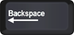
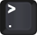
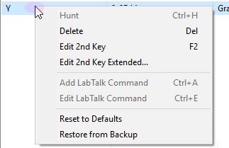
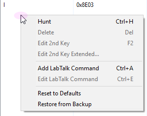

|
|
Aktuelle Standard-Tastenkombinationen mit STRG haben alle Zahlen und Buchstaben auf der Tastatur erschöpft. Um weitere Kombinationen zu unterstützen, wurden in Origin 2025b die Tastenfolgen eingeführt.
Wenn Sie die STRG-Taste gedrückt halten und dann die Präfixtaste ”\” drücken, wartet Origin auf die zweite Taste der Folge (Hinweis in der Statusleiste unten) und ein Nachrichtenfeld wird angezeigt mit einer Liste der Tastenfolgen, die vordefiniert sind. Sie können die gewünschte zweite Taste wählen, um die gewünschte Aktion auszuführen.
Wenn Sie mit der Maus während des Wartemodus‘ für die zweite Taste irgendwohin klicken, wird das Warten abgebrochen.
Sowohl die Präfixtaste als auch die zweite Taste können im Dialog Tastenfolgen geändert werden.
Um den Dialog Tastenfolgen zu öffnen:
Bestimmen Sie den/die für die aktuelle Tastenkombination verfügbare(n) Fenstertyp(en). Wenn Sie ein Menüelement wählen, das für alle Fenstertypen verfügbar ist, wird der Kontext auf Beliebig gesetzt. Falls nicht, wird Kontext auf den aktiven Fenstertyp gesetzt.
Die Standardpräfixtaste ist der Backslash “\”. Sie kann geändert werden in die folgenden Tasten:
| Slash (/) | Backslash (\) |  |
|
|---|---|---|---|
| Rücktaste |  |
Taste 1 (!) | |
| Semikolon (;) |  |
Apostroph (') |  |
| Komma (,) |  |
Punkt (.) |  |
|
Neben diesem Dialog können Sie auch die Datei KeyChords.ini im Anwenderdateiordner bearbeiten. |
Die zweite Taste kann dann eine beliebige andere Taste auf der Tastatur sein, einschließlich die Pfeiltasten, die Tasten Enter, Leerzeichen, Entfernen etc. Origin wird mit einem vordefinierten Satz Tasten ausgeliefert, die Sie im Listenfeld des Dialogs Tastenfolgen finden können.
Sie können alle bearbeitet und gelöscht werden, und Sie können auch neue Tasten hinzufügen.
Klicken Sie mit der rechten Maustaste auf ein Listenelement. Wenn Sie mit der rechten Maustaste auf eine leere Fläche klicken, wird eine Liste mit Kontextmenüs aufgerufen.
| Auf Menüelement | Auf leere Fläche |
|---|---|
 |
 |
| Auswählen |
Wählen Sie ein Menü oder eine Symbolleistenschaltfläche, um eine Tastenkombination für ihm bzw. sie festzulegen.
Die Menü-ID und Aktionsbeschreibung werden im Dialog Tastenfolgen wiedergegeben. Drücken Sie die Esc-Taste, um den Auswahlmodus zu verlassen. Siehe Einzelheiten unter Eine neue Tastenfolge hinzufügen. |
|---|---|
| 2. Taste erweitert bearbeiten… |
Klicken Sie doppelt auf die Zelle der 2. Taste oder klicken Sie mit der rechten Maustaste auf sie und wählen Sie 2. Taste erweitert bearbeiten im Kontextmenü, um einen kleinen Dialog zum Auswählen der 2. Taste zu öffnen.
Geben Sie die 2. Taste ein oder wählen Sie sie in der Auswahlliste. |
| LabTalk-Befehl hinzufügen / LabTalk-Befehl bearbeiten |
Fügen Sie eine Tastenkombination für den/die LabTalk-Befehl(e) hinzu. Der Befehl wird in der Spalte Aktion gezeigt. Falls es mehrere Befehlszeilen gibt, wird nur die erste Zeile gezeigt.
Klicken Sie mit der rechten Maustaste auf eine Tastenkombination für einen LabTalk-Befehl und wählen Sie LabTalk-Befehl bearbeiten, um die Skripte zu modifizieren. |
Fügen Sie eine neue Tastenfolge hinzu. Einzelheiten lesen Sie bitte im Abschnitt unten.